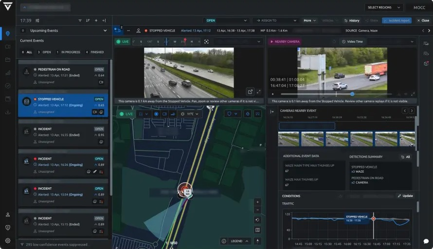
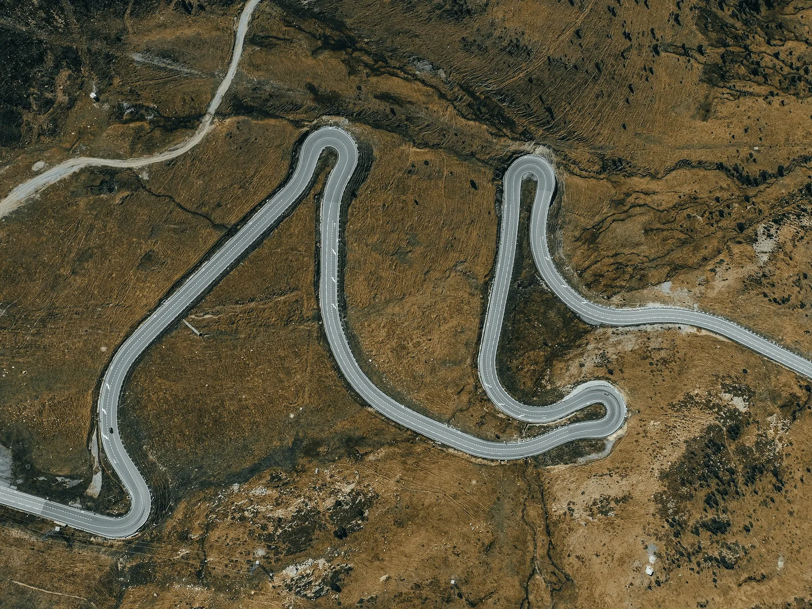

.svg)
.svg)
Lanternn AI traffic management platform
99.9% uptime. No new roadside hardware.
Detect incidents up to 25 minutes faster across your road network
Lanternn fuses your cameras, sensors, weather and navigation data into one validated view, so your control room sees real incidents sooner and responds faster.
Customers and partners
Measured results
What road operators measure with Lanternn
Valerann's published real-world results.
In the control room
One view of every camera, sensor and navigation feed
Fuses every source. Lanternn combines CCTV, sensors, radar, weather and navigation feeds into one operational view.
Validates each alert. Lanternn cross-checks each event across sources and scores its confidence before operators see it.
Filters routine congestion. Lanternn models each corridor and time period, so peak traffic doesn't raise alerts.
Covers camera gaps. Navigation and connected vehicle data flag incidents on stretches with no CCTV coverage.

Lanternn works with the systems you already run
None is needed. Lanternn runs on your existing IP cameras and ITS infrastructure.
Start with data fusion through an API into your current ATMS, then add modules.
One operator's 50,000 daily data points became about 23 alerts a day.
Automatic PTZ recalibration keeps each event located to the right lane.
Lanternn runs on ISO-certified cloud and stores no personally identifiable imagery.
You choose a dedicated or client-hosted cloud on AWS, Azure or Google Cloud.
Results on 4 road networks
About 97.5% noise reduction from raw data to operator alerts
Up to 40% more true and relevant safety events a day

34% reduction in incidents with KSIs
14% reduction in accidents with KSIs
What operators say
Road operators on working with Lanternn
Questions
What to know before you talk to us
Do we need to install new hardware?
No. Lanternn is hardware agnostic and sits on top of your existing ITS infrastructure, so there's no extra hardware to install. You'll need data and internet connectivity and standard workstations.
Can it work alongside our current ATMS?
Yes. Lanternn is modular, so you can take data fusion only through an API into your existing ATMS, or run the full incident management suite.
Which data sources does it use?
Lanternn reads CCTV from PTZ and fixed IP cameras, traffic sensors, radar, weather data and navigation feeds. One US state DoT combined its cameras with Waze, HERE, Google Maps and weather data.
How is our data handled?
Lanternn is cloud-native software with dedicated or client-hosted cloud options. It stores no personally identifiable imagery, and its data handling is GDPR-aligned.
What size of network does it suit?
Lanternn suits networks of any size, from single corridors to nationwide systems. Published deployments include a 40 km motorway section and a 100-mile corridor.
See how Lanternn can help your operation
Coverage beyond traditional infrastructure
Actionable insights, not alerts
Designed for real control-room workflows
Advanced data fusion for complex road networks

We'll reply by email to arrange a time that suits you.
Valerann has headquarters in London, UK and Wilmington, USA. The Maine Turnpike Authority has signed a five-year agreement to deploy Lanternn across its 109-mile road network.